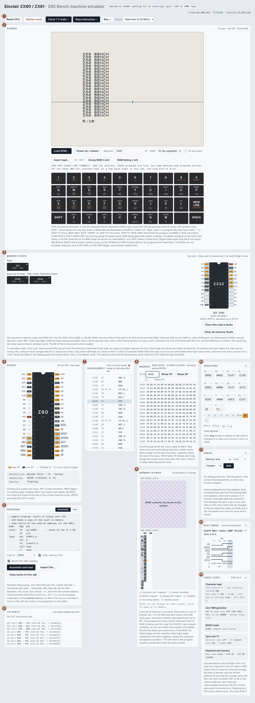
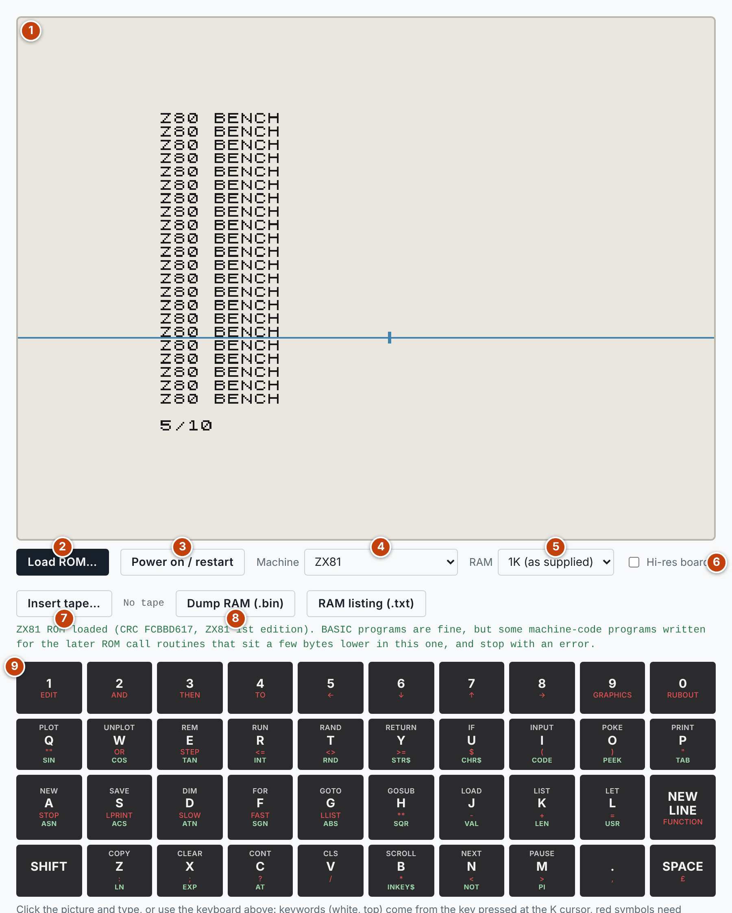
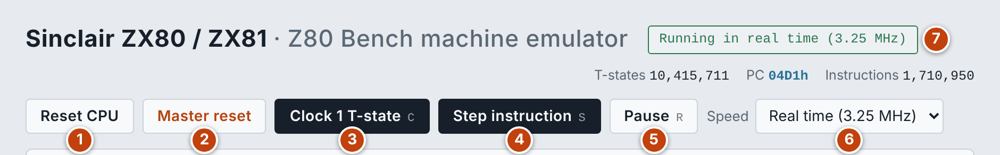
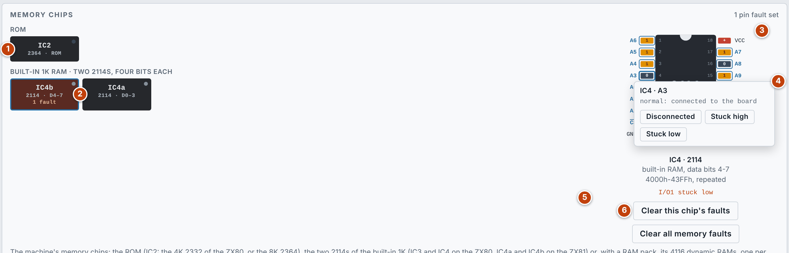
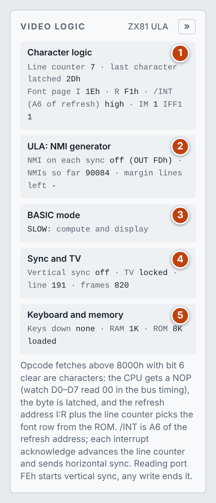
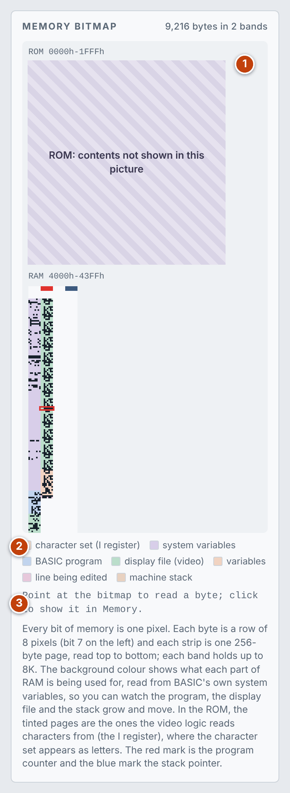

> LIST
Sinclair ZX80 and ZX81 documentation
How to use the emulator, and how the machine it models is put together. The numbers in each list match the numbered markers on the screenshot above it.
User guide
The emulator is Z80 Bench with a Sinclair ZX80 or ZX81 built around the CPU. Everything Z80 Bench does still works here; this guide covers what the machine adds, and points to the Z80 Bench documentation for the shared debugging tools.
Quick start
- Choose the Machine: ZX80 (4K ROM), ZX80 with the 8K ROM, or ZX81.
- Press Load ROM… and choose your own ROM image for that machine: 4 KB for the ZX80, 8 KB for the ZX81 BASIC. The ROMs are copyrighted and are not included. Your browser keeps each one, so you only load it once.
- The machine switches on and shows the K cursor at the bottom of the picture.
- Click the picture and type, or click the keys drawn under it.
The screen

- Toolbar: reset, clock, step and run controls.
- Screen: the TV picture, the machine and RAM choices, tape and the keyboard.
- Memory chips: the ROM and RAM chips, with live pins and fault simulation.
- Pinout: the Z80, live.
- Program: the assembler and hex loader.
- I/O ports
- Disassembly
- Memory
- Memory bitmap: ROM and RAM as a picture, tinted by what BASIC is using each part for.
- Registers
- Debug: breakpoints, stops and faults.
- Bus timing
- Video logic: the state of the circuit that turns the CPU's work into a picture.
The machine, the display and the keyboard

- Picture: built the way a TV would build it, from the machine's own sync pulses. On a ZX80, and on a ZX81 in FAST mode, it blanks while BASIC is busy, as on the real machine. Click it to give it the keyboard. While you step, a blue marker shows where the beam is. The line above the picture says whether the TV is in sync, and the line and frame being drawn.
- Load ROM…: loads the ROM image for the machine chosen. The message under the buttons names the ROM it recognised.
- Power on / restart: resets the machine and runs it in real time.
- Machine: the ZX80 with its 4K Integer BASIC; the ZX80 with the 8K ROM upgrade, which gives ZX81 BASIC in FAST mode only; or the ZX81.
- RAM: 1K as supplied, or a 16K, 32K or 48K RAM pack.
- Hi-res board: adds 8K of RAM at
2000hthat also answers the Z80's refresh cycles, as the SCRAM and WRX boards did, so programs written for them can draw true high-resolution pictures. - Insert tape…: see Tape and RAM dumps.
- Dump RAM (.bin) and RAM listing (.txt)
- Keyboard: the 40 keys, each showing what it types: the BASIC keyword in white on top, the SHIFT symbol in red, and on the ZX81 the FUNCTION word in green. The labels come from the ROM's own tables.
Typing BASIC
Sinclair BASIC is typed a keyword at a time. When the cursor shows K, the next key gives its keyword: P types PRINT. Otherwise keys give their letter or digit.
- SHIFT gives the red symbol on a key. On the on-screen keyboard it latches for one key; on your own keyboard hold Shift.
- Enter is NEW LINE.
- Backspace is RUBOUT (SHIFT and 0).
- FUNCTION (8K ROM): SHIFT and NEW LINE, then a key, gives the green word.
The program in the picture above was typed as 1 0 P SHIFT+P Z80 BENCH SHIFT+P NEW LINE, then 2 0 G 1 0 NEW LINE, then R NEW LINE. It stops with report 5 when the screen is full.
Tape and RAM dumps
- Loading: press Insert tape… and choose a
.ofile (4K ROM) or a.pfile (8K ROM), then typeLOAD(with the 8K ROM,LOAD "") and NEW LINE. Loading is instant. The emulator picks the right machine for the file and plugs in the 16K RAM pack when a program needs it. - Saving: type
SAVE(with the 8K ROM,SAVE "NAME") and the program downloads as a.oor.pfile. - Dump RAM (.bin): saves the RAM as a raw file.
- RAM listing (.txt): a readable listing with the system variables, the memory areas, the BASIC program as text and a hex dump.
Running and stepping

- Reset CPU
- Master reset: also clears memory, breakpoints, stops and faults. It asks for a second click.
- Clock 1 T-state (C): one clock period. This is the way to watch a character being turned into pixels.
- Step instruction (S)
- Run / Pause (R). The keyboard shortcuts work when the picture does not have the keyboard.
- Speed: Real time (3.25 MHz) runs at the machine's own speed. Full speed runs as fast as your computer allows. The slow clock rates let you watch the pins change.
- Status: what the machine is doing, or what halted it.
Memory chips and fault simulation

- ROM: IC2, the 4K 2332 of the ZX80 or the 8K 2364.
- RAM: the two 2114s of the built-in 1K, four data bits each. With a RAM pack fitted, its 4116 dynamic RAMs appear here instead, one for each data bit in each 16K. A tile's dot lights while its chip is being accessed, and a tile with a fault turns red.
- Pinout: click a tile to see that chip's pins, which follow the bus on every clock.
- Pin menu: click a pin and choose Disconnected, Stuck high or Stuck low.
- Faults on this chip
- Clear this chip's faults and Clear all memory faults
The machine then runs with the fault, and the memory view and the disassembly show what the CPU reads through it:
| Pin | Fault | Effect |
|---|---|---|
| Address | Any | The chip uses the wrong cell. A disconnected input floats high |
| Data | Any | That bit is changed on reads and writes |
| Chip select (RAS or CAS on a dynamic RAM) | Stuck high or disconnected | The chip is out of circuit |
| Write enable | Stuck high or disconnected | Writes are lost |
| Write enable | Stuck low | Every access becomes a write |
Faults are listed in the Debug pane and cleared there, here, or by Master reset. Two things are assumed, not measured: that the first 2114 holds data bits 0–3, and that the RAM pack is wired in the usual way.
Video logic panel

- Character logic: the line counter (which of a character's eight rows is being drawn), the last character latched, the I and R registers that form the font address, the /INT line, and the interrupt mode and enable.
- ULA: NMI generator (ZX81 only): whether an NMI fires on each line, how many have fired, and the blank margin lines left to count.
- BASIC mode (8K ROM only): SLOW, which computes and displays together, or FAST, which shows the picture only while waiting for a key.
- Sync and TV: vertical sync, whether the TV has locked onto the picture, and the line and frame count.
- Keyboard and memory: the keys held down and the RAM and ROM fitted.
With the hi-res board ticked, a further block shows how many picture bytes were fetched from RAM.
Memory bitmap

- Bands: the ROM, then the RAM, one pixel per bit. The red mark is the program counter and the blue mark the stack pointer. In the ROM, the tinted pages are the ones the video logic reads characters from, where the character set appears as letters.
- Tints: the background colour shows what each part of RAM is being used for, read from BASIC's own system variables: the system variables, the program, the display file, the variables, the line being edited and the machine stack. You can watch them grow and move.
- Readout: point at the bitmap to read a byte; click to show it in the Memory panel.
The debugging tools
The remaining panels are Z80 Bench's own and work the same way here.
- Pinout
- Loading a program: you can assemble your own code into the machine's RAM
- Disassembly and breakpoints
- Memory
- Registers and register stops
- Debug pane: memory, pin and bus stops
- Bus timing
Hardware reference
The machines
| ZX80 | ZX80 with the 8K ROM | ZX81 | |
|---|---|---|---|
| CPU | Z80A at 3.25 MHz (a 6.5 MHz crystal divided by 2) | ||
| ROM | 4K Integer BASIC | 8K BASIC with floating point | |
| Video logic | Discrete TTL logic chips | One ULA, which adds the NMI generator | |
| Display while computing | Blank | Kept on in SLOW mode | |
| RAM | 1K built in, more with a RAM pack | ||
How the picture is made
The ZX80 has no video chip. The Z80 itself runs through the display file, and a little logic turns what it does into a picture:
- To draw a line of characters, the ROM jumps to the display file at an address with A15 set, so the CPU "executes" the characters.
- When an opcode is fetched above
8000hand bit 6 of the byte is clear, the byte is a character. The logic latches it and forces the data bus to zero, so the CPU sees aNOP. - In the second half of every opcode fetch the Z80 puts its refresh address, the I and R registers, on the address bus. The logic uses I, the latched character code and a 3-bit line counter to address one row of that character's shape in the ROM.
- The ROM byte goes into a shift register and out to the TV as 8 pixels. Bit 7 of the character inverts them.
- Each display line ends with a
HALT(76h, which has bit 6 set and so is executed). The CPU then idles with R still counting. - /INT is wired to A6 of the refresh address. When R counts far enough for A6 to go low, the interrupt fires. Its acknowledge cycle advances the line counter and starts horizontal sync, and the interrupt routine goes back to step 1 for the next scan line.
- Reading the keyboard port starts vertical sync; any port write ends it and clears the line counter.
A scan line takes 207 T-states as the ROM times it. The emulator draws two pixels per T-state and keeps 312 lines for its virtual TV, which locks onto the sync pulses as a real set would. Because the CPU is the video generator, the picture disappears whenever the CPU is doing anything else.
What the ZX81 adds
- NMI generator: the ULA can fire an NMI on every horizontal sync.
OUT FEhturns it on andOUT FDhturns it off. The ROM uses the NMIs to count the blank lines above and below the picture while your program runs in between, which is SLOW mode. - /WAIT: when an NMI meets a
HALT, the ULA holds /WAIT so that the picture starts at exactly the right clock. - Sync: horizontal sync comes from a free-running counter that each interrupt acknowledge re-phases.
The ZX80 fitted with the 8K ROM has none of this hardware, so it runs ZX81 BASIC in FAST mode only.
Memory map
| Address | Contents |
|---|---|
| 0000h–1FFFh | ROM. The 4K ROM appears twice |
| 2000h–3FFFh | The ROM again, or the hi-res board's 8K of RAM |
| 4000h–7FFFh | RAM. The built-in 1K repeats through the whole area; a 16K pack fills it |
| 8000h–FFFFh | With up to 16K: a copy of 0000h–7FFFh, because A15 is not decoded (it is the video trigger). With a 32K or 48K pack: more RAM |
With a 32K or 48K pack, opcode fetches from C000h up still see the copy of 4000h–7FFFh, because that is where the display file is executed.
The memory bitmap's tints follow BASIC's system variables, which start at 4000h. The RAM listing prints them all by name.
I/O ports
Only address line A0 is decoded (and A1 on the ZX81, for the NMI generator).
| Access | Effect |
|---|---|
Read with A0 low (port FEh) | D0–D4: the keyboard columns, low for a pressed key. D6: high on a 50 Hz machine. D7: tape input. Also starts vertical sync |
| Any write | Ends vertical sync and clears the line counter |
ZX81: write with A0 low (FEh) | NMI generator on |
ZX81: write with A1 low (FDh) | NMI generator off |
Keyboard
The 40 keys form eight half-rows of five. During the port read, the upper half of the address bus selects the half-rows: a low address line selects its row, and a pressed key reads as 0.
| Row (low) | D0 | D1 | D2 | D3 | D4 |
|---|---|---|---|---|---|
| A8 | SHIFT | Z | X | C | V |
| A9 | A | S | D | F | G |
| A10 | Q | W | E | R | T |
| A11 | 1 | 2 | 3 | 4 | 5 |
| A12 | 0 | 9 | 8 | 7 | 6 |
| A13 | P | O | I | U | Y |
| A14 | NEW LINE | L | K | J | H |
| A15 | SPACE | . | M | N | B |
Memory chips
| Position | Chip | Use |
|---|---|---|
| IC2 | 2332 (4K) or 2364 (8K) | ROM |
| IC3, IC4 (ZX80) IC4a, IC4b (ZX81) | 2114 (1K × 4 bits) | Built-in 1K of RAM, four data bits in each chip |
| RAM pack | 4116 (16K × 1 bit) | Eight chips, one for each data bit, in each 16K |
These follow the published schematics. They have not yet been checked against a real board.
What is not emulated
- Tape signals: LOAD and SAVE work on whole files instantly; the cassette waveform is not modelled.
- The ZX Printer
- 60 Hz machines: the keyboard port always reports a 50 Hz machine.
- The hi-res board's RAM chips are not in the Memory chips panel.